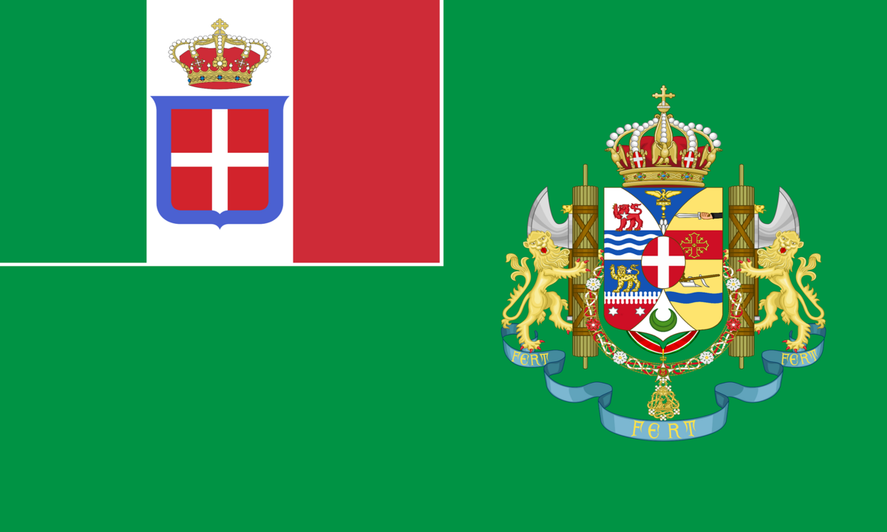

Nos anos 30, a Etiópia era um dos poucos estados independentes da África, governada pelo imperador Haile Selassie. Internamente, o país enfrentava dificuldades econômicas e sociais, além de uma estrutura política tradicional que dificultava a modernização. Externamente, a Etiópia encontrava-se em posição vulnerável, cercada por colônias europeias — britânicas, francesas e italianas — e sofria pressão direta da Itália fascista, que buscava expandir seu império africano. Essa situação culminou na invasão italiana de 1935, que colocou em xeque a soberania etíope e a credibilidade da Liga das Nações.
Alianças: A Etiópia não possuía alianças militares formais, mas buscava apoio internacional por meio da Liga das Nações, esperando que o princípio da segurança coletiva garantisse sua independência. O imperador Haile Selassie também tentou aproximar-se de potências como o Reino Unido e a França, mas encontrou respostas limitadas, já que essas nações hesitavam em confrontar diretamente Mussolini.
Interesses: Os principais interesses etíopes estavam centrados na preservação da independência nacional e na defesa de sua integridade territorial contra o expansionismo italiano. O país buscava modernizar suas forças armadas e fortalecer sua posição internacional, mas dependia da solidariedade das democracias ocidentais e da eficácia da Liga das Nações para conter a agressão estrangeira. Posicionamento na Guerra Ítalo-Etíope: Durante a invasão de 1935, a Etiópia foi a vítima direta da agressão italiana. O imperador Haile Selassie denunciou o ataque na Liga das Nações, tornando-se símbolo da luta contra o imperialismo e pela segurança coletiva. Apesar de sua resistência militar, o país foi ocupado pelas forças italianas, revelando a fragilidade da ordem internacional e a incapacidade da Liga em proteger estados menores contra potências revisionistas. Para a Etiópia, o episódio significou não apenas a perda temporária de sua soberania, mas também a demonstração de que a solidariedade internacional era insuficiente diante da ascensão do fascismo e da política expansionista das grandes potências.
Durante a invasão de 1935, a Etiópia foi a vítima direta da agressão italiana. O imperador Haile Selassie denunciou o ataque na Liga das Nações, tornando-se símbolo da luta contra o imperialismo e pela segurança coletiva. Apesar de sua resistência militar, o país foi ocupado pelas forças italianas, revelando a fragilidade da ordem internacional e a incapacidade da Liga em proteger estados menores contra potências revisionistas. Para a Etiópia, o episódio significou não apenas a perda temporária de sua soberania, mas também a demonstração de que a solidariedade internacional era insuficiente diante da ascensão do fascismo e da política expansionista das grandes potências.
Como pesquisar:
A Guerra Ítalo-Etíope, por se tratar de um conflito entre a menor das grandes potências e um país africano, não obteve a mesma atenção midiática e histórica dos outros conflitos retratados no comitê. Entretanto, a guerra foi essencial para o estabelecimento da ordem mundial que resultou na eclosão da guerra, afastando a Itália dos países componentes da antiga Entente e aproximando-a dos poderes do Eixo. Para pesquisar sobre esse tema, você pode ultilizar o guia disponibilizado acima, para entender o posicionamento do país que representa no conflito. A partir disso, pesquise por argumentos que possam fortalecer e bancar sua argumentação no debate (ex.: se a posição do país for condenar a invasão, pesquise sobre os supostos crimes de guerra cometidos pela Itália e sobre o direito à soberania da Etiópia, e se for defender a invasão, pesquise sobre as promessas feitas à Itália na conferência de Berlim e na entrada do país na Grande Guerra). Se você estiver disposto a pesquisar conteúdo em outras línguas, o uso do inglês te trará um volume maior de informação, pesquisando por termos como "second italo-ethiopian war arguments" ou "italian war crimes in ethiopia". Você pode, para facilitar sua pesquisa, ultilizar o Google Tradutor e a tradução automática de páginas. Note que é preciso de cuidado para evitar confusões com a primeira invasão italiana da Etiópia, ocorrida em 1895-1896, que, embora esteja relacionada ao tema do debate, foi um conflito inteiramente separado.
Recomendo ainda, para maior entendimento do contexto, o vídeo seguinte, do canal "Eu Afro": POR QUE ITÁLIA INVADIU ETIÓPIA. Nota-se que o vídeo NÃO SERVE COMO FONTE, mas apenas como um conteúdo introdutório para maior compreensão.
Após a conquista da Etiópia em 1936, o país passou a ser administrado como colônia do Império Italiano. Nesse contexto, o posicionamento oficial diante da invasão japonesa da China refletia diretamente os interesses de Roma. Assim, a Etiópia, sob o governo colonial, alinhou-se ao apoio dado pela Itália ao Japão, reforçando a solidariedade entre potências revisionistas que contestavam a ordem internacional estabelecida pela Liga das Nações. A ocupação da China era vista como paralela à própria anexação da Etiópia, legitimando a ideia de que a expansão territorial era um direito das potências emergentes. Dessa forma, o posicionamento etíope não expressava a vontade de seu povo, mas sim a política imperialista italiana, que buscava fortalecer o Eixo e enfraquecer os princípios da segurança coletiva.
Como pesquisar:
A Invasão japonesa da China, considerada por alguns historiadores como o começo da Segunda Guerra Mundial, foi um conflito essencial, que passou a definir o restante do pré-guerra. O conflito, em grande medida, ditou os rumos que o teatro do Pacífico tomaria durante a Segunda Guerra propriamente dita, desde Pearl Harbor até os bombardeios de Hiroshima e Nagasaki. Para pesquisar, utilize o guia disponibilizado, para se familiarizar com o posicionamento do seu país, e busque argumentos contra o lado adversário, assim como para a defesa de seu “representante” na guerra e para o seu país. Ademais, você pode usar de argumentos coringa para atacar aliados do país adversário de maneira mais geral. O conteúdo em inglês e português para o tema já é bem mais explorado que na guerra Ítalo-Etíope, de modo que é mais fácil encontrar conteúdos para usar de argumentos. Recomendamos também o estudo (pelo menos superficial) do contexto do extremo oriente desde pelo menos a Era Meiji, passando pelos acordos desiguais e pela Guerra Russo-Japonesa, por exemplo.
Aqui está um vídeo para maior compreensão do tema: Um vídeo do canal Vogalizando: O IMPERIALISMO JAPONÊS. Nota-se que o vídeo NÃO SERVE COMO FONTE, mas apenas como um conteúdo introdutório para maior compreensão.